KernelShark is a front end reader of trace-cmd(1) output. "trace-cmd record" and "trace-cmd extract" create a trace.dat (trace-cmd.dat(5)) file. kernelshark can read this file and produce a graph and list view of its data.
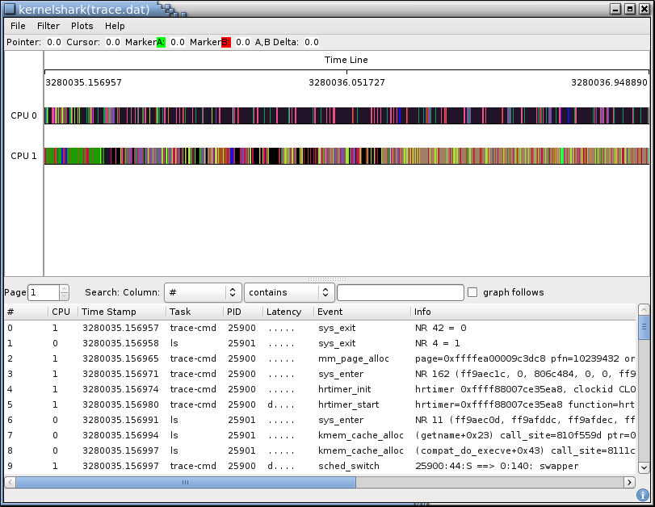The application has two main viewing areas split by a paned divider. The top half is a graphical display of the data and the bottom half is a list view of each event. Underneath the menu bar is the graph information area:
The graph information line displays the timestamp of various locations. The Pointer: shows the timestamp of where the mouse pointer is. The Cursor: is the timestamp of the cursor location. To select a cursor location, double click on the graph. Marker A is set with a left mouse click and Marker B is set with a with a left mouse click while holding down the shift key.
The graph is broken into two parts, the plot title section:
and the plot area:

The plot area contains the data of the given plot, where plots can be per CPU or per task. The top of the plot area shows a timeline. The numbers in the timeline are seconds. The time in the timeline is taken from the timestamps within the trace.dat file which are architecture dependent. The time usually is the timestamp from when the system started.
Below the graph is the list area.
The list area contains the Page of the list. The list can hold a maximum of 1 million entries per page. If the trace data contains more than a million entries, then the list will have more than one page.
The list area also contains a search field to search for elements in the list.
The graph view of kernelshark shows graphical plots of the data stored in the trace.dat file. The data plots are per CPU or per task. When there are too many events within the resolution of the graph, the plots will appear as a rainbow colored bar. To make more sense out of the graphs, you need to zoom into a given location to see the details of that time frame more clearly.
To zoom in, left mouse click and hold and then drag the mouse right, release to zoom. When you click the left mouse button a line will appear and stay at that location. When you move the mouse to the right, another line appears and will follow the mouse. When you release the mouse button, the area between the two lines become the new width of the screen. That is, the graph zooms in until the lines match the width of the screen. This allows you to zoom into a specific location.
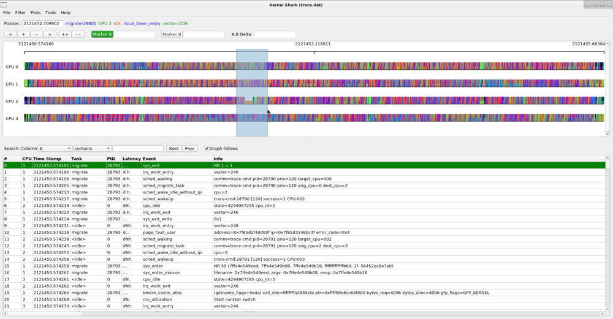The area that you selected will now become the new width of the viewable area. The smaller the selection, the deeper the zoom. Note, that you must select 10 pixels to zoom in. Less than 10 pixels will cancel the zoom. You can continue zooming in until you get more details.
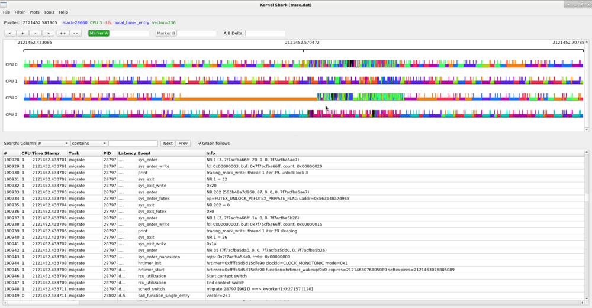To save on resources, when zooming in, the beginning and end of the full trace may not be reachable with the horizontal scroll bar. If a plot contains no events within the reachable area, then the line will be empty, as CPU 1 is in the above image.
CPU 0 shows two tasks that were running. One task is given a pink/red color and the other a green color. The think colored horizontal bar represents a task other than idle was running. The small lines that jet out of the bar are where events occur.
If you zoom in enough such that a single event has enough room between itself and other events, the type of event and the name and PID of the task that was running will appear over the event.
To zoom back out, left mouse click and hold and then drag the mouse left. This time the width between the two lines will become a single pixel. The farther apart the lines are, the farther the zoom out will be. Zoom out will stop at the width of the full trace.
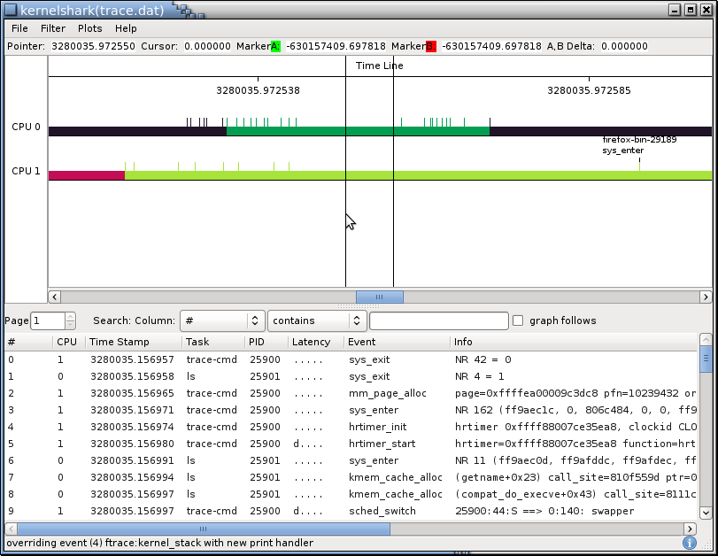When the mouse is over an event, a tool tip will appear showing the event name, the latency data, the event info, the timestamp and the task name and task process ID.
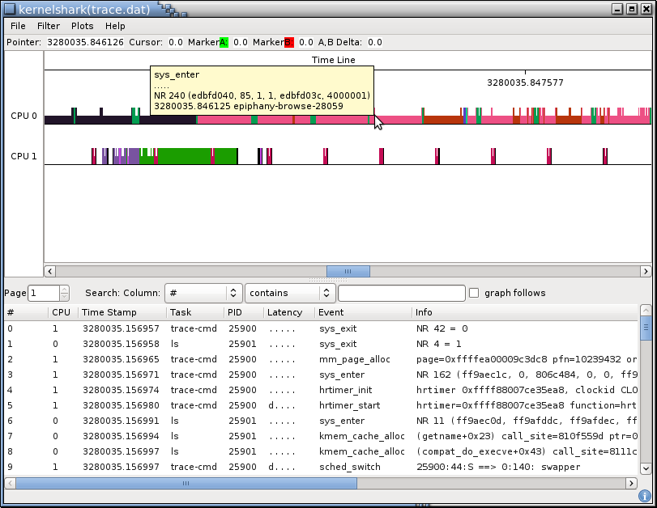There are two markers that can be placed on the graph as well as a cursor. Marker A is set by a left mouse click. When a marker is set, the graph info area will be updated. Marker A is represented by a green line:
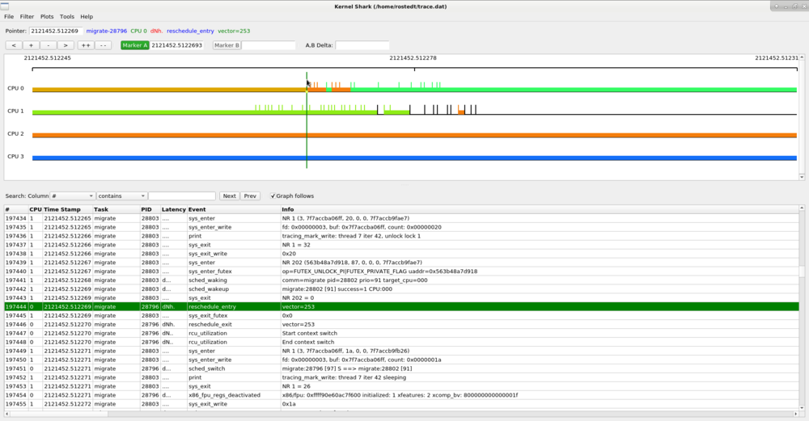To set Marker B, press and hold the shift key and click the left mouse button. Marker B will show up in red.
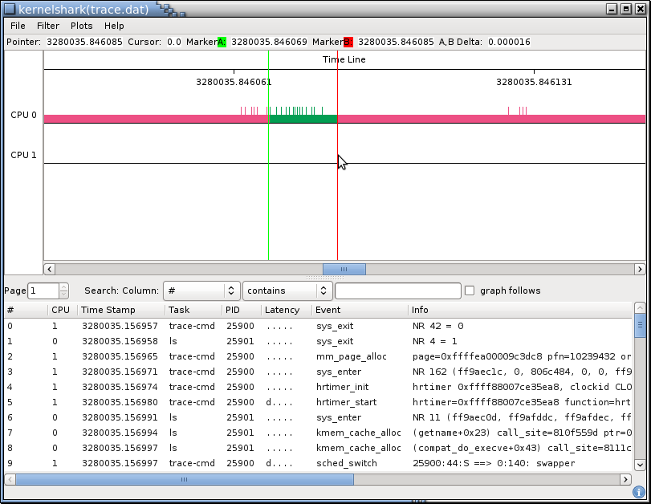When both the A and B markers are set, the graph info area will show the timestamp of where the A and B markers are, as well as the difference between the two. All timestamps are in seconds, with a resolution of microseconds.
Double clicking on the graph will set the cursor. The cursor is a blue line, and when it is set, it will also select the event in the list view that is the closest event at the timeline of where the cursor was selected.

The above shows that list item 217448 (sys_exit) was the closest event to where the cursor was selected.
Note that setting the cursor with double click will also set Marker A.
The graph data is represented by plots. The data on the plots is either CPU specific or task specific. If it is CPU specific, then the data is the timeline of events that happened on a given CPU (which CPU is shown in the plot title area). If the plot is task specific, then the timeline of events is for the given task regardless of what CPU it was on at the time. The task name is also shown in the plot title area.
By default, all the CPUs within the loaded trace.dat file are plotted. There are two ways to plot a task. One way is to right mouse click over a displayed task in the graph and select the plot option. This will add the task plot directly underneath the CPU plot that the task was on where the right mouse click took place. The other way is to use the Plots menu.
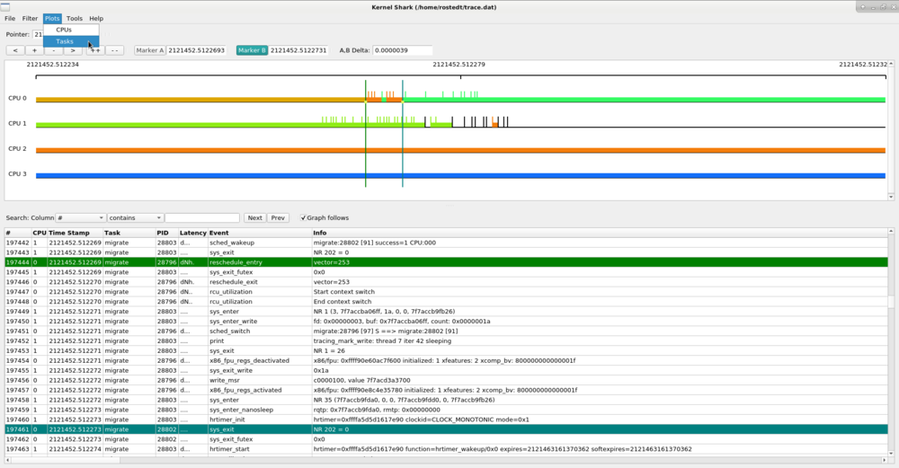Selecting the "Tasks" menu item will bring up a dialog with all the tasks that were found in the trace data.
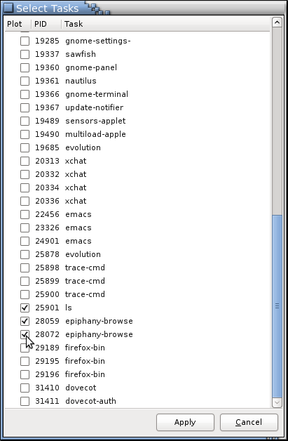Selecting a task in this dialog will add the task plot to the bottom of the graph area. Unselecting a task in this dialog will remove the plot.
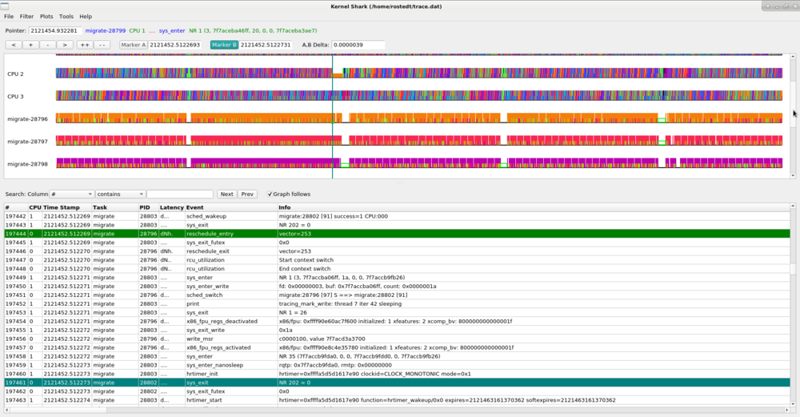The colors in the task plots are different depending on which CPU the task was on at the time. The CPU plots change colors as different tasks run on the CPU, and the task plots change color depending on what CPU the task is running on. This makes it easy to see how much a task bounces around the CPUs. Zooming in on a task plot also shows some more characteristics of the task.
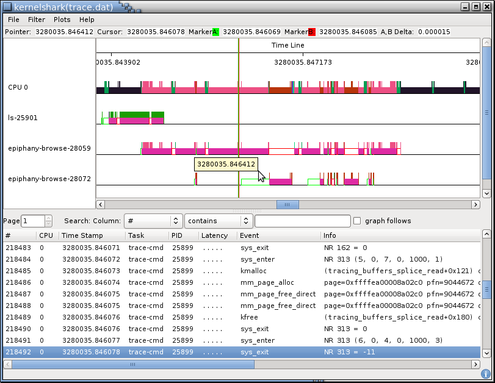The hollow green bar that is shown in front of some events in the task plot represents when the task was woken up from a sleeping state to when it actually ran. The hollow red bar between some events shows that the task was preempted by another task even though that task was still runnable.
Since the hollow green bar shows the wake up latency of the task, the A,B markers can be used to measure that time.
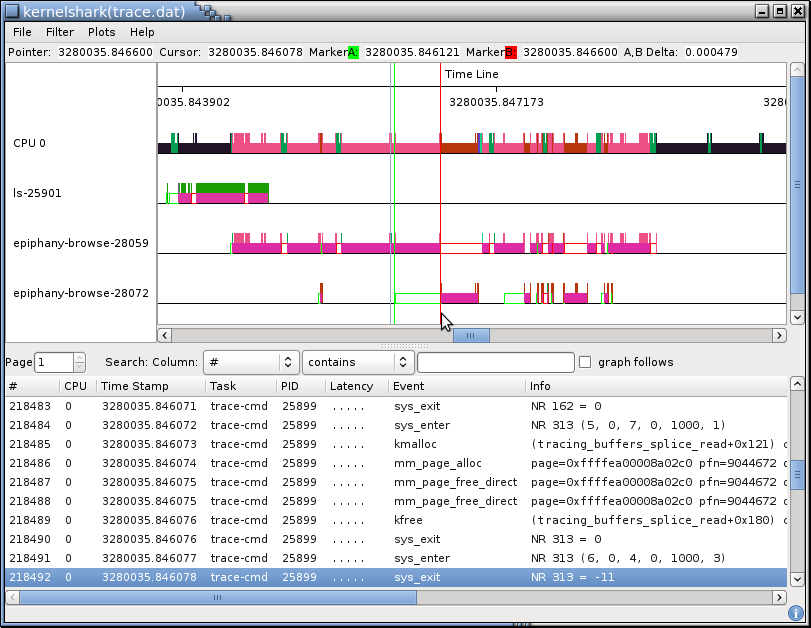The above shows that the epiphany-browser with PID 28072 had a 479 microsecond wake up latency. The same can be done with the preemption latency.

Selecting the "CPUs" plot menu item pops up a dialog that shows the available CPUs that can be plotted.
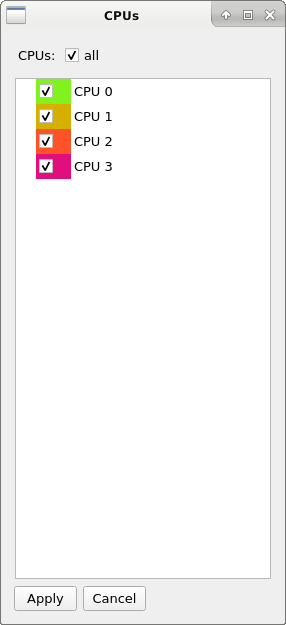
Removing a selected CPU and hitting "Apply" will remove that CPU plot.
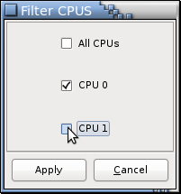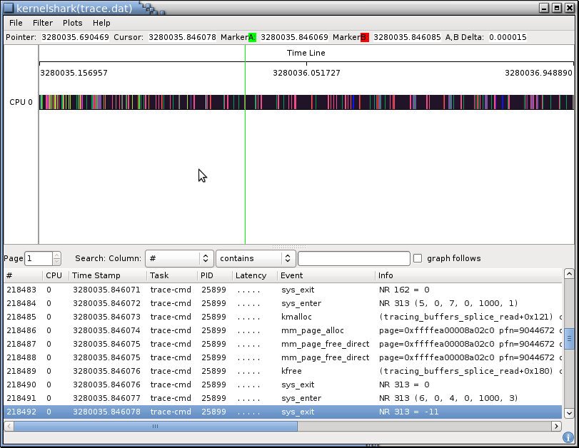
The list view is in the bottom half paned window and can be expanded or shortened with the paned handle.
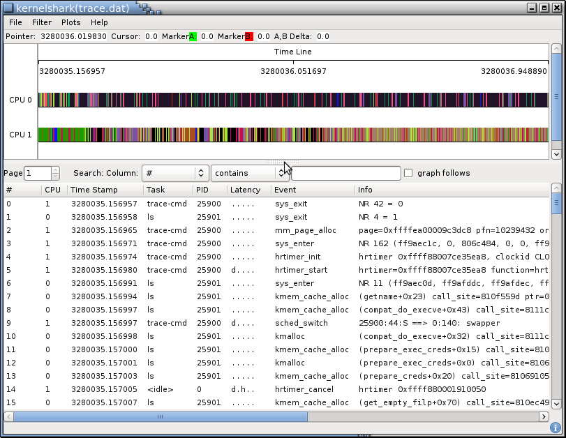The top of the list view contains the list area which has the list page, list search, and "graph follows" toggle button. If more than a million events are stored in the list, then each set of million will be on a different page.
The columns of the list are:
The list search can find an event based on the contents in a row. Select a column, a match criteria and the content to match to find the next row that matches the search. The match criterion is one of the following:
The search will find the next event that has the matching data within the column.
A single click on a row will select the row, but a double click on a row will select that row as well as set the graph cursor to the location of that event. If the plot that the event is on is not visible then the graph will adjust its vertical view area to show the plot with the selected event. This has no effect on graph markers.
When the "graph follows" toggle is set, then even a single click on a row will move the graph cursor. With the mouse focus on the list, using the keyboard up and down arrow keys will move the selection of the list as well as the graph cursor.
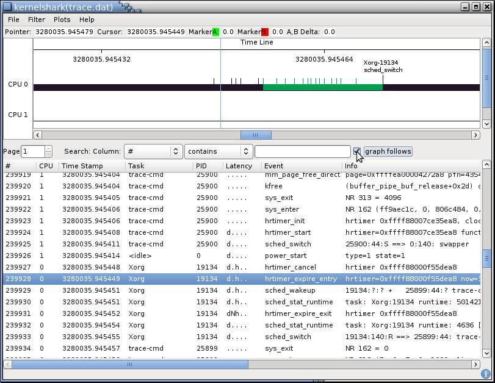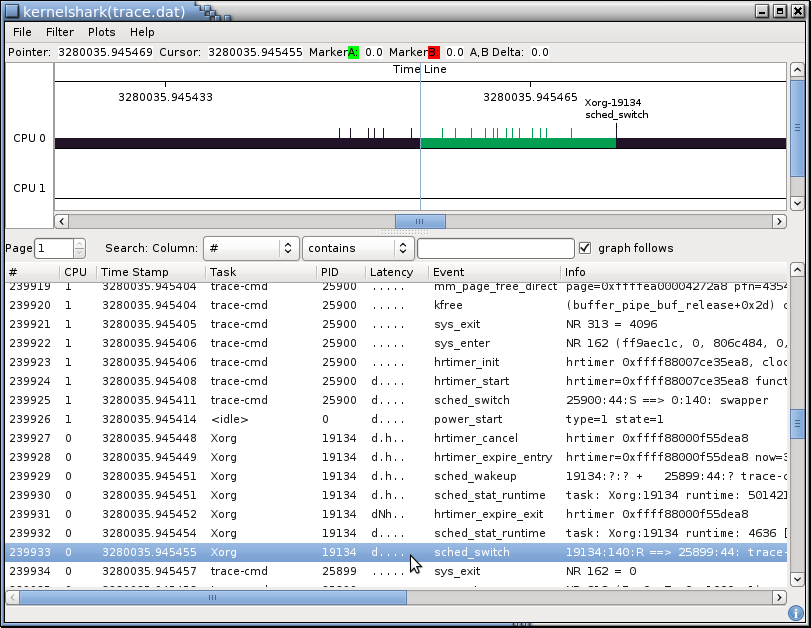
The amount of data that can be stored in a trace.dat file can be enormous. To make any sense out of some traces, it may be required to only display various events. The same can be true about tasks. Kernelshark has filters for tasks as well as for events.
On start up of KernelShark, the task and event filters for the list and graph are kept synchronized. That is, any modification to the list filters will also update the graph filters, and vice versa. By selecting Filter->Unsync Graph and List Task Filters or Filter->Unsync Graph and List Event Filters will make the graph and list have their own task or event filters respectively.
The task filter can be set by either a right mouse click over an event on either the graph or the list view, and by selecting the option to add or remove the task to/from the task filter. A set of tasks may be added to the filters via the Filter menu in the menu bar.
When tasks are selected from the menu bar the filter will be enabled automatically. When they are selected via the pop up menu, the filter needs to be enabled by the Enable menu also in the pop up menu.
There are two types of task filters:
If there are any tasks within the Task Filter then only those tasks will be displayed when the filter is enabled. Any task within the Hide Tasks filter will not be displayed, even if that same task is in the Task Filter.
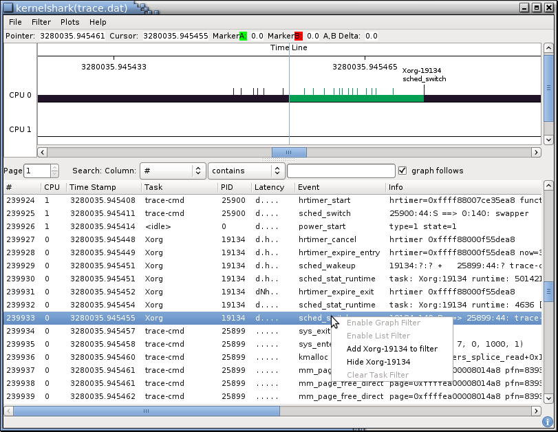When either filter contains a task, the filter can be enabled.
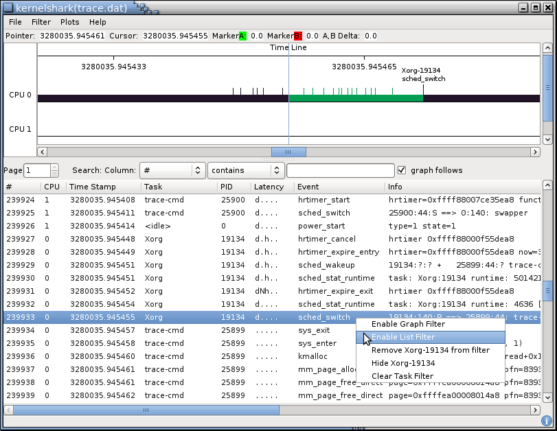When a task is not in the "Task Filter", the pop up will show the menu item "Add task". When a task is in the "Task Filter" the pop up will show "Remove task".
When a task is not in the "Hide Tasks", the pop up will show the menu item "Hide task". When a task is in the "Hide Tasks", the pop up will show "Show task".
The events "sched_switch", "sched_wakeup", and "sched_wakeup_new" are treated differently by the task filter. Because these events deal with two tasks (previous and next, waker and wakee), if either of the tasks should be visible then that event is visible regardless if the other task should be hidden. This may seem confusing when an event that is hidden shows up in the Task column.
Like the task filter, the graph and list event filters start off synchronized. To make the list and graph have their own filter, just select the Filter->Unsync Graph and List Event Filters. The same can be done for task filters.

Now the graph and list view will each have their own event filter. The event filters are enabled through the Filter menu on the top menu-bar.
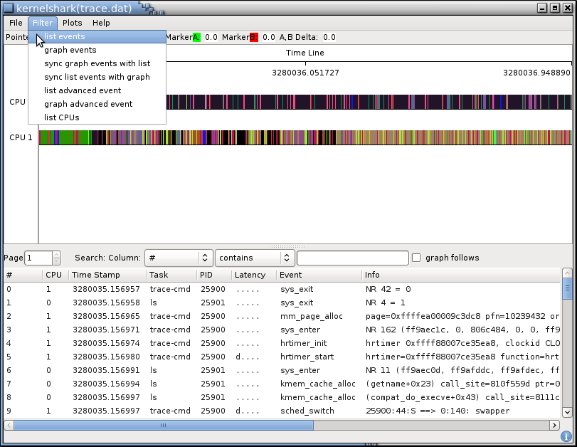Notice that the menu changed after selecting Unsync Graph and List Event Filters. The events option was replaced by graph events and list events.
Selecting either the "list events" or "graph events" will bring up the event dialog with the events that are visible selected.
Note: these do not mean that the events exist in the trace.dat file. They are selected if the events are not to be hidden. Events that do not exist in the trace will not be displayed regardless of whether or not they are filtered.
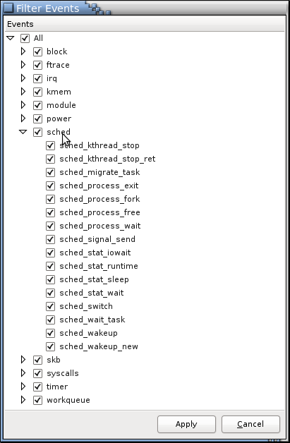Clicking on "All" or any of the systems will either deselect all events underneath or select all events underneath depending on the previous state of the box being selected. By deselecting all events, it makes it easier to enable just a few individual events.
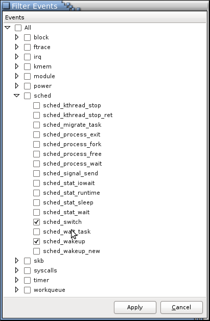
To sync back the graph and list events, just select the Sync Graph and List Event Filters.

If the selected events for the graph and list event filters are the same, then the two will become in-sync again. If not, a dialog will pop up asking how you want to sync the filters.
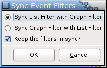By default the Keep the filters in sync is selected. If this is selected when OK is clicked, the graph and list filters will stay synchronized when one is changed. By unselecting the Keep option, the filters will by synchronized by the selected method, but a change to one of the filters will not affect the other.
Filtering on events may not be enough. The ability to filter on the content of individual events may be needed. In order to accomplish this, the advanced event filtering is used. Selecting the "list advanced event" or "graph advanced event" from the Filter menu will pop up the advanced event filtering dialog. The graph and list view each have their own advanced event filter.
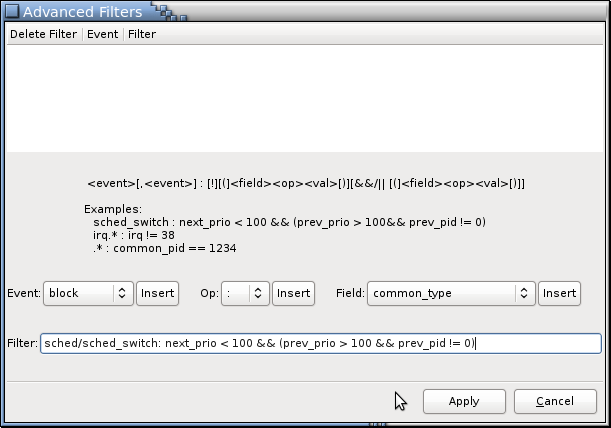The "Filter:" entry at the bottom of the dialog is where the advanced filter is written. Above that is helper buttons to pick events, operations and event fields. The syntax of the filter is:
FILTER := EVENTS | EVENTS ':' EXPRESSION
EVENTS := EVENTS ',' EVENTS | SYSTEM '/' EVENT | SYSTEM | EVENT
SYSTEM := any system name
EVENT := any event name
EXPRESSION := EXPRESSION BOOL EXPRESSION | '(' EXPRESSION ')' | OPERATION
BOOL := '&&' | '||'
OPERATION := '!' EXPRESSION | LVALUE CMP RVALUE | LVALUE STRCMP STRVALUE
CMP := '>' | '<' | '==' | '>=' | '<=' | '!='
STRCMP := '==' | '!=' | '=~' | '!~'
RVALUE := integer | FIELD
STRVALUE := string (double quoted value) | FIELD
LVALUE := FIELD | EXPR
EXPR := FIELD OP RVALUE | '(' EXPR ')' | EXPR OP EXPR
FIELD := a field name of an event
OP := '+' | '-' | '*' | '/' | '<<' | '>>' | '&' | '!'
Spaces are ignored. The example used in the dialog figure:
sched/sched_switch : next_prio < 100 && (prev_prio > 100 && prev_pid != 0)
The sched/ is not necessary because without it, the filter will process all events named sched_switch, and since there is only one event that has that name, including the sched/ is redundant.
The next_prio, prev_prio and prev_pid are all event fields of the sched_swich event.
If just sched was used and the /sched_switch was omitted, it would still be a valid filter, but it would behave differently. By just specifying a system, the filter will run on all events within that system. When a field is encountered that does not belong to an event, then that compare will be set to false.
sched : prev_pid != 0 sched : !(prev_pid == 0)
The above two filters are not equivalent. They are for the sched_switch event, but not for the other events. The first filter will return false for all events that do not contain the prev_pid field, but the second filter would return true for all events that do not contain that field. Again, if the event does not contain a field, just that compare will be evaluated to false, not the entire expression. This means for events that do not have the prev_pid field, the above filters would be equivalent to:
sched : FALSE sched : !(FALSE)
Letting filters contain fields that do not belong to an event be valid allows for various tricks where two events can share the same filter.
sched_switch, sched_wake.* : next_pid == 1 || pid == 1
The schedule events that have next_pid and not pid as a field will just compare the first part of the || and those events with pid but without next_pid will be compared against the second part of the ||
Notice that event names in the filter can be regular expressions.
String fields can have regular expressions used in their comparing if =~ or !~ are used.
sched_switch : next_comm =~ "^events/[23]$"
The available regular expressions are described in regex(7).
Note: When adding an advanced filter, all non-advanced filters (added by the event filter dialog box) will be removed, and only the advanced filters will stay. But non-advanced filters may be added after advanced filters have been. The events that have advanced filters will be shaded in the event filter dialog:
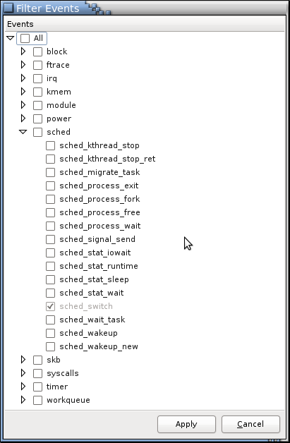
Just do not click on the advanced filter box and hit "Apply" unless you want to remove the advanced filter. Non-advanced filters can now be selected without affecting the advanced filters.
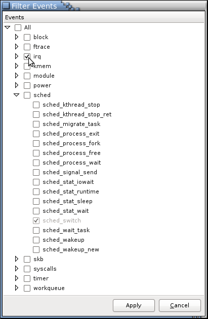When advanced filters already exist when the advanced filter dialog box pops up, they will be listed in the area at the top of the dialog. Although one filter may have been written, the list will be per event. A check box is to the left of the filter. When checked, the filter will be deleted if the "Apply" button is selected.
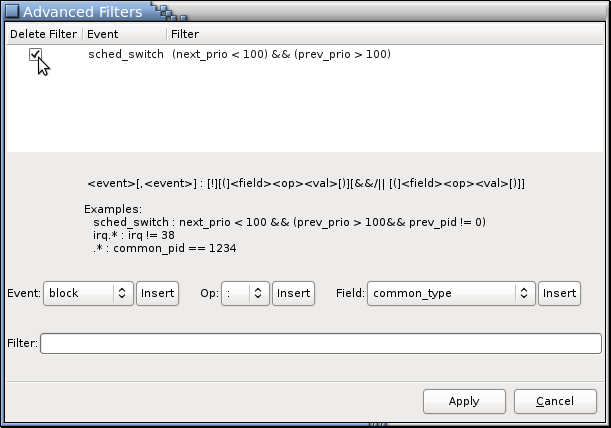